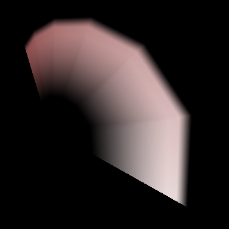

Render - Ribbon¶
Overview¶
Here we explain the parameters that affect the drawing when "Ribbon" is selected in the Render window.
When "Ribbon" is selected, effects are drawn along a continuous ribbon.
The ribbon is not drawn for each individual particle. Rather, it connects all children of a certain particle by drawing a path between them. For example, if there are particles 1, 2, and 3 which are the children of particle 0, a shape like a ribbon will be drawn between 1, 2, and 3. The ribbon is shaped by connecting lines between (-0.5, 0, 0) and (0.5, 0, 0) of each particle.

Parameters¶
"Render Settings" window
Rendering Order¶
Specify the order in which particles are drawn among particles generated from the same node. For "Order of spawn", the first generated particle is the first drawn, while in "Reversed", the first generated particle will be drawn last. That is, in the order of generation, the drawing of the last generated particle is given priority over the first generated particle.
UV Type¶
It sets the UV repeat pattern.
Strech¶
It uses one image for the entire ribbon. It is suitable for particles with a long length, such as a laser.
Tile¶
It repeats one image within one ribbon. It is suitable for particles with repeating patterns, such as chains. It can also specify not to repeat only the edges.
Configuration¶
The shape of the ribbon is a thick line connecting the (-0.5, 0, 0) and (0.5, 0, 0) points centered on each particle. Normally, the direction of the line connecting the two points will depend on the rotation of the particle (for "Fixed"), but these options specify whether to automatically rotate the ribbon toward the camera.
The number of spline division¶
This parameter makes the shape smooth by dividing the ribbon finely. It looks beautiful, although processing becomes heavier.
Division : 1 | Division : 8 |
|  |  |
Color All¶
Specify the overall color of the ribbon.
Vertex Color¶
Specify the color used at each vertex (corner) of the ribbon.
Vertex Coords¶
Specify the coordinates of each vertex of the ribbon. Only X coordinates can be specified here.